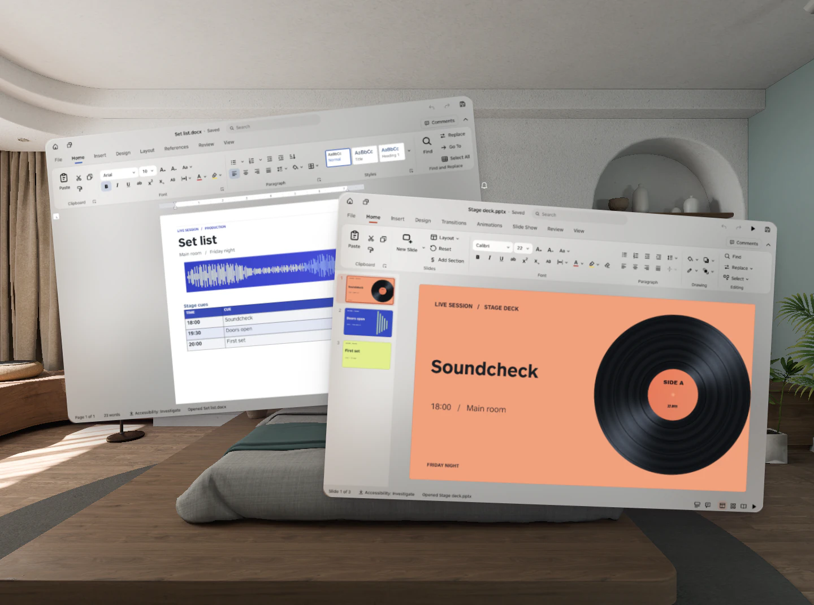
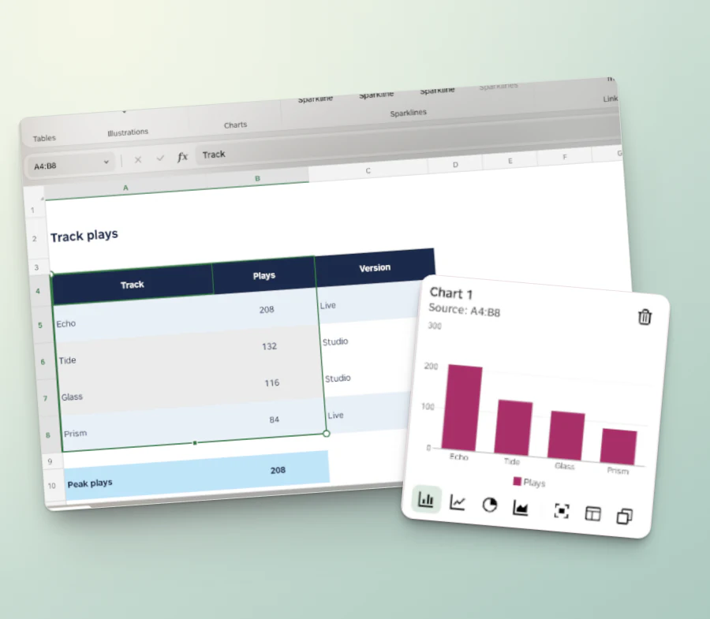
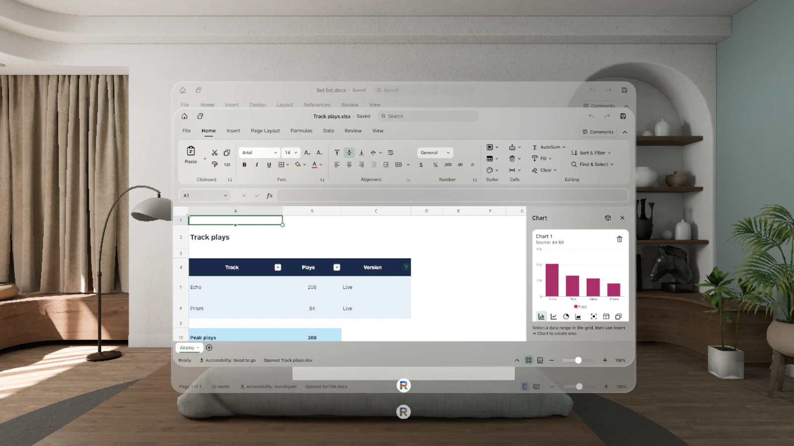

文档
DOCX / ODT / TXT用标题、表格和可点击的目录梳理长文。对照两份草稿，逐条接受或拒绝修订，也可以选中一段文字发起讨论。
在你的空间里撰写文档、分析表格、放映演示。把参考资料放在手边，抬眼就能对照。
免费 · 版本 1.3.4 · PICO OS 6.2 或更高 · arm64

从一场现场演出开始。写下流程，找出播放次数最多的曲目，再做一份彩排时能直接放映的演示。
用标题、表格和可点击的目录梳理长文。对照两份草稿，逐条接受或拒绝修订，也可以选中一段文字发起讨论。

用跨表公式计算，按播放次数排序，或筛出某个场地的记录。把结果做成图表，也可以用单变量求解从目标值反推输入。

用版式、图片和切换效果组织内容。排练时记录用时，放映时自己查看备注和下一页，让观众看到单独的演示画面。

选择「在新窗口打开」，就能把资料放在视线里。在 Pages 里看演出流程，同时在 Sheets 里核对曲目数据。两份文件各占一个 PICO Space Pro 空间窗口。
33 秒英文宣传片带你实际看一遍，怎样把一份演出流程写成文档、整理成图表，再放上演示屏。
| 编辑器 | 打开和保存 | 还可打开 |
|---|---|---|
| 文档 | DOCX, ODT, TXT | DOC, RTF |
| 电子表格 | XLSX, ODS, CSV | XLS |
| 演示文稿 | PPTX, ODP | PPT |
较早的 DOC、XLS 和 PPT 格式会另存为可编辑的新副本。三个编辑器都支持导出 PDF。
文件可以直接在头显上打开和保存，无需注册应用账号，离线也能继续编辑。
自动保存会把编辑写入本机。意外中断后，可从自动恢复提供的草稿继续。
界面有 18 种语言可选。三个编辑器都内置了实体键盘快捷键指南。